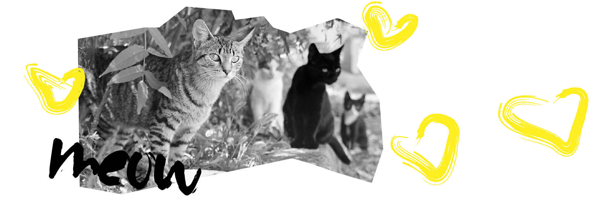

<!DOCTYPE html>
<html lang="en"></html>
<head>
    <meta name="viewport" content=width=device-width, initial-scale=1.0/>
    <style>
            .col-sm-4 {
  background-color: yellow;
  width: 300px;
  border: 15px solid black;
  padding: 50px;
  margin: 20px;
}
      body {
        font-family: "Lato", sans-serif;
      }
      
    
    }
      
      .sidepanel .closebtn {
        position: absolute;
        top: 0;
        right: 25px;
        font-size: 36px;
      }
      
      .openbtn {
        font-size: 20px;
        cursor: pointer;
        background-color: #111;
        color: white;
        padding: 10px 15px;
        border: none;
      }
      
      .openbtn:hover {
        background-color:#444;
      }
      </style>
      </head>
      <body>
      <div id="mySidepanel" class="sidepanel">
        <a href="javascript:void(0)" class="closebtn" onclick="closeNav()">×</a>
        <a href="Services.html">Services</a>
        <a href="Why Trap-Neuter-Return.html">Why Trap-Neuter-Return?</a>
        <a href="Volunteer.html">Volunteer</a>
        <a href="Catio-Tour-2020.html">Catio Tour 2020</a>
        <a href="FCCOHome.html">Home</a>
      </div>
    
      <button class="openbtn" onclick="openNav()">☰ Menu</button>  
      <script>
      function openNav() {
        document.getElementById("mySidepanel").style.width = "250px";
      }
      
      function closeNav() {
        document.getElementById("mySidepanel").style.width = "0";
      }
      </script>
  <link rel="stylesheet" href="../css/style2.css"/>
    <title>Feral Cat Coalition</title>
</head>
<body>
  <body style="background-color: cyan;"></body>
  <div class="container">
    <h2> Feral Cat Coalition of Oregon</h2>

    </div>
 
    <div class="row"></div>
    <h2> Services </h2>
    <p></p>
    <h3>These services are for feral or stray cats only.</h3>
      <p>Feral/Stray cats are trapped, brought to our clinic and returned to the area where they are being fed by caregivers.</p>
        <p>These services are provided for a suggested donation of $40 per cat, though no cat is turned away for non-payment.</p>
      <div class="col-sm-4">
        <h3>FERAL AND STRAY CAT SERVICES</h3>
        <ul>
          <li>Spay/Neuter Surgery</li>
          <li>Vaccines</li>
          <li>Pain Medication</li>
          <li>Treatment for fleas, mites and other minor medical conditions</li>
          <li>Right ear tip identifier under anethesia</li>
        </ul>
        <p>Cats that appear ill may be tested for feline leukemia(FelV) and feline immunodeficiency virus. More info on our testing policies below.</p>
      </div>
      <h3>For low cost PET cat options:</h3>
        <p>Contact the Oregon Spay/Neuter Fund
        (888) 664-7729 or
        (503) 853-1963 or
        Email: rainbowcurio@hotmail.com
      </p>
   </div>
  </div>
  <div class="footer">
    <h4>We rely on your donations and volunteer time!</h4>
    <button class="button">Donate Now</button>
 </div>
  </body>